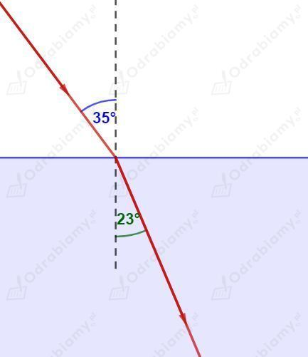

W zadaniu korzystamy z prawa Snelliusa:
a)
Prędkość światła w powietrzu:
Prędkość światła w szkle:
Kąt padania:
Wyznaczmy kąt załamania:
b)
Prędkość światła w powietrzu:
Prędkość światła w wodzie:
Kąt padania:
Wyznaczmy kąt załamania:
c)
Prędkość światła w wodzie:
Prędkość światła w powietrzu:
Kąt padania:
Wyznaczmy kąt załamania:
W zadaniu korzystamy z prawa Snelliusa:
Prędkość światła w powietrzu:
Prędkość światła w wodzie:
Kąt załamania wynosi:
Wyznaczmy kąt padania :
W zadaniu korzystamy z prawa Snelliusa:
Prędkość światła w powietrzu:
Prędkość światła w szkle:
Kąt padania wynosi:
Wyznaczmy kąt załamania:
Uzupełniamy schemat biegu promienia światła.

Aby zaobserwować halo w powietrzu muszą powstać kryształki lodu odpowiednio załamujące promienie światła. Takie warunki mogą wystąpić w mroźny i słoneczny dzień, zatem halo najłatwiej jest zaobserwować zimą.
Prawidłowo ukazany cień osoby patrzącej na tęczę jest na rysunku A.
Tęczę obserwujemy zawsze mając słońce za plecami. Promienie światła ulegają zjawisku całkowitego wewnętrznego odbicia w kroplach wody zawieszonych w powietrzu, dlatego ich bieg zawraca w stronę obserwatora.
Zosia nie zobaczyła żadnej tęczy. Tęczę możemy obserwować tylko jeśli stoimy przodem do obszaru, gdzie pada deszcz i za naszymi plecami znajduje się słońce. Promienie słoneczne ulegały zjawisku całkowitego wewnętrznego odbicia wewnątrz kropel wody i trafiały tylko do oczu Maćka.
Prosty test pozwalający na ocenę, czy okulary posiadają filtr polaryzacyjny możemy wykonać przy użyciu ekranu naszego smartfona. Patrząc na ekran przez okulary z filtrem polaryzacyjnym i obracając smartfon o kąt 90° powinniśmy zauważyć wyraźną zmianę jasności ekranu lub nawet pojawienie się ciemnych fragmentów. W przypadku zwykłych okularów przeciwsłonecznych nie zauważymy zmian jasności ekranu - będzie on po prostu przyciemniony.
Nie możemy zbliżać się, ani oddalać od tęczy - jej rozmiary nie ulegają zmianie podczas naszego ruchu w jej kierunku. Tęcza nie jest fizycznym obiektem położonym w przestrzeni, a jedynie obrazem powstającym w wyniku rozszczepienia światła, które odbite w kroplach wody pada w naszą stronę.
Pozorne położenie łuku tęczy w przestrzeni zależy od wzajemnego położenia Słońca, kropel wody w powietrzu i obserwatora. Nasza odległość od obrazu tęczy obserwowanego w danych warunkach będzie zawsze taka sama (tęcza będzie zachowywała swoje rozmiary), ponieważ będzie w czasie rzeczywistym tworzyła się w ustalonej odległości od nas.